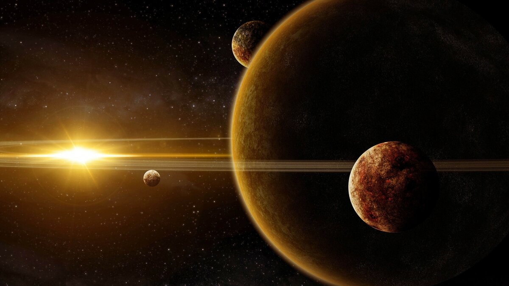
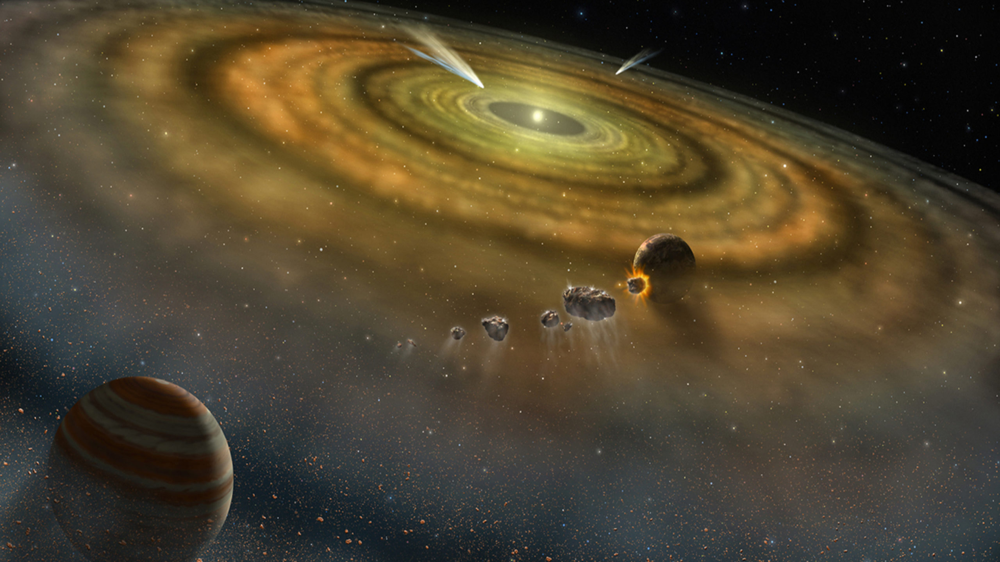
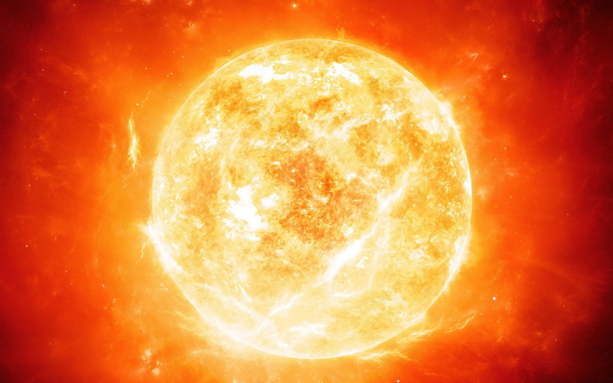
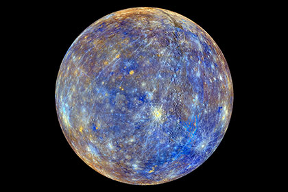
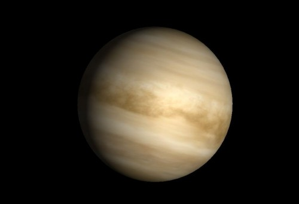
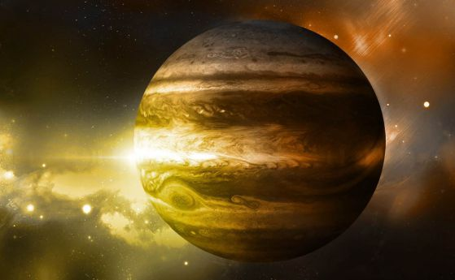
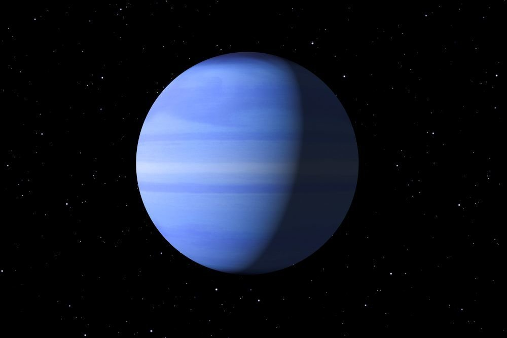

Солнечная система
×
Солнечная система — звездая система, образованная звездой Солнце и вращающимися вокруг неё планетами и др. естественными и искуственными (со второй половины XXI века по календарю Земли) космическими объектами.
Четыре сравнительно малые по размеру и ближайшие к Солнцу планеты — Меркурий, Венера, Земля, Марс — относят к так называемым планетам земной группы. Четыре внешних планеты — Юпитер, Сатурн, Уран, Нептун — сравнительно крупные и массивные но рыхлые планеты-гиганты, называемые планетами группы Юпитера. (Ср. полность Юпитера лишь в 1,5 раз больше воды. По этой причине Юпитер все лишь лишь в 318 раз больше Земли по массе.) Между этими двумя группами планет располагается пояс астероидов (см. Мальдек). За Нептуном находятся так называемые плутоиды — планета-карлик Солнечной системы — Плутон, Седна и др. транснептуновые объекты и пояс Койпера. Еще дальше (за поясом Койпера) распологается облако Оорта. Семь планет из одинаннодцати (если считать планетами Плутон и Седну) имеют естественные спутники.
Солнечная система входит в состав галактики Млечный путь.

Как появляются планеты?
×
Четыре с половиной миллиарда лет назад наше Солнце еще не было такой яркой звездой, как сегодня. Оно было компактное и очень, очень горячее, но все же еще не достигло критической плотности и температуры, необходимых для поддержания ядерного синтеза в его ядре.И, пока Солнце было на этой эмбриональной стадии, планеты начали свое медленное вальсирующее формирование. Ближе к юной звезде жара и света хватало, чтобы в этих областях оставался только каменистый материал: лед испарился, а различные газы, такие как водород и гелий, просто улетели вглубь молодой Солнечной системы. Оставшимся каменистым кускам ничего не оставалось, как медленно слипаться под действием гравитации, образуя все более крупные сгустки.
В конце концов, по прошествии достаточного количества времени (а у Вселенной возрастом больше 13 миллиардов лет свободного времени, очевидно, хватает), эти кусочки сформировали планетезимали, маленькие зародыши планет. Их было много, и это было довольно жестокое время для нашей Солнечной системы, поскольку эти планетезимали сталкивались, разрушались и преобразовывались бесчисленное количество раз. Наша собственная Земля тогда столкнулась с объектом размером почти с Марс, и обломки от этого удара в конечном итоге стали Луной.
Однако за пределами области, которая в конечном итоге стала поясом астероидов, формирование планет происходило по-другому. Там было достаточно холодно, чтобы лед мог «выжить», позволяя ядрам планет вырастать до огромных размеров за короткий промежуток времени.
Затем эти большие ядра с мощной гравитацией стали притягивать окружающий материал, в основном как раз водород и газообразный гелий, улетевшие из внутренней части Солнечной системы. В итоге эти миры стали окутываться плотной пеленой атмосферы — так и родились планеты-гиганты.

Состав Солнечной системы
×
Солнце
Солнце, сосредоточило в себе 99,9% всей массы системы. Звезда состоит в основном из водорода и гелия. По сути, это гигантский термоядерный реактор. Температура поверхности около 6000 °С. Но зато внутренний нагрев светила зашкаливает за 10 000 000 °С.
Меркурий
×
Ближайшая к Солнцу, но и самая малая из планет. Она очень медленно обращается вокруг себя, за полный оборот вокруг светила делая лишь полтора оборота вокруг своей оси. Планета не имеет ни атмосферы, ни спутников, днём раскаляясь до +430 °С, а ночью охлаждаясь до – 180 °С.

Венера
×
Самая романтичная и ближайшая к Земле планета тоже для жилья не пригодна. Она плотно укутана толстым одеялом облаков из углекислого газа, и при температуре до + 475 °С имеет давление у поверхности, испещрённой кратерами, свыше 90 атмосфер. Венера очень близка Земле размерами и массой.

Земля
×
.jpg) Марс
Марс
×

Юпитер
×
Самая крупная газовая планета-гигант. Будь его масса в несколько десятков раз больше, он реально смог бы стать звездой. Сутки на планете длятся около 10 часов, а год протекает за 12 земных. Юпитер, как Сатурн и Уран, имеет систему колец. Их у него четыре, но они не очень ярко выражены, из далека можно и не заметить. Зато спутников у планеты больше 60.
 Сатурн
Сатурн
×
 Уран
Уран
×

Нептун
×
Так же, как и Уран, Нептун состоит из газа, включающего в себя воду, аммиак и метан. Последний, концентрируясь в атмосфере, придаёт планете голубой цвет. Планета имеет 5 колец и 13 спутников. Главные: Тритон, Протей, Ларисса, Нереида.